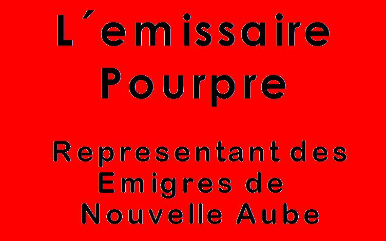

Forums galactiques > Poubelle publique de l'assemblée galactique > Poubelle automatique
kratos25/02 ETU 20:43 | Je sui dacor avec l\abbé ramouflon |
Rudzain 26/02 ETU 17:22 | Commandants, Il est temps de soulever un problème que nous n'avons abordé que de façon succinte : le projet de "détruire toute nouvelle idée", décidé actuellement en dehors de la coalition gouvernementale par le commandant Imothep (qui ne cesse de le vomir en publique). Son but est de détruire les nouvelles idées de la galaxie, ralentir la mise en place d'élections. Ainsi donc, aucune nouvelle idée de cette Galaxie ne pourrait être adopté par le gouvernement... même si la majorité des commandants est pour. Il ne crée donc rien, on aurait une assemblée soustraite au regard d'Imothep qui poste de très nombreux propos inutiles. Plusieurs autres raisons nous poussent à nous opposer à ce projet : 1. Complexité. Le projet de "détruire toute nouvelle idée" va favoriser l' inactivité, rendant le système institutionnel plus ennuyant à consulter, et beaucoup plus ouvert à la participation de tous les guignols. - Comment ne pas sombrer dans une assemblée qui ne communiquerait que des âneries ? - Il faudrait bâtir une procédure de contrôle d'une complexité et d'une LENTEUR extreme... 2. Opacité Comment avoir accès aux véritables informations ? --> Ce projet sera t il ouvert aux guignols ? Alors quel avantage pour notre assemblée ? --> Ce projet sera t il illimité ? Et alors les commandants n'auront plus accès aux vrais débats de cette assemblée. 3. Caractère antidémocratique qu'il implique. En effet, ce sera CE projet qui nous menera vers l'inaction et non plus SEULEMENT certains commandants. C'est une manoeuvre scandaleuse pour VOLER aux commandants le droit à apporter des idées. 4. Réalisme. La majorité des commandants passent peu de temps sur notre bonne vieille Assemblée Galactique, et ils passent encore moins de temps sur le forum externe. Et vous voulez créer un nouveau projet, qui rendrait n'importe qu'elle Assemblée inutile ? 5. Sur la forme, ce ne peut être qu'Imothep en dehors d'un gouvernement élu qui pourra mette en place ce projet. Si Imothep bloque encore les élections, et qu'il nous fait subir son projet, nous y opposerons dans la mesure où il n'y a pas encore de véritable gouvernement. Ca c'est légtime. Imothep qui décide cela actuellement n'a AUCUNE légitimité pour nous imposer l'inaction. Surtout après qu'il ait repoussé de plusieurs semaines les élections. FACE A CELA NOUS PROPOSONS UN SYSTEME SIMPLE : ON TEST LA NOUVELLE ASSEMBLEE AVEC LES GENS QUI LE VEULENT, PAS BESOIN DE L'ACCORD D'IMOTHEP. Voila les raisons tout à fait claires et sincères qui nous pousse à nous opposer FORMELLEMENT à ce projet saugrenue. Je prie mes contradicteurs d'éviter les remarques insultantes et de s'en tenir au débat de fond. |
dechiketeur 27/02 ETU 20:51 | Je crois que tu vas être une de mes victimes ! Je commence à en avoir marre de ces plaintes. Sans cesses qu'il y en a ici. Arrêtez, arrêtez de dégrader cette assemblée, nettoyons la de tout ces parasites ! |
neo sound02/03 ETU 13:57 | Et puis ce nom est nul, et sans explication, je peut imaginez que vous donnez des fleurs et jouez à la poupée ! |
man sazy03/03 ETU 16:49 | chers commandantes et commandants en esperant que vous lirez ce message j'aimerais avoir qu'elque renseignement ou aide pour avoir des ressource car il manque plutot serieusement et j'en ai grand besoin cordialement man sazy |
nemesiss07/03 ETU 21:45 | c pourri emilien |
Aigle blanc 29/03 ETU 20:50 | moche |
| l Emissaire Pourpre  30/04 ETU 03:30 | En raison d une polemique qui m oppose en prive au commandant Vladok, et pour repondre a l intervention d un commandant dont je m excuse d avoir oublie le nom, je me permets d ouvrir un sujet precis sur la question du caractere fasciste du mouvement ultreme. Les Peuples de la Galaxie ont le droit de savoir et de juger par eux memes. |
l Emissaire Pourpre30/04 ETU 03:34 | voici le message du Commandant Vladok en integralite, nous avons simplement coupe les 3 premieres lignes qui comportaient une insulte a notre egard, ceci ne concernant pas la question et aussi par soucis d honnetete, le commandant Vladok s etant retracte sur cette partie precise de sa missive. L Emissaire appuya sur un bouton de son pupitre et chacun recut le message, qui s afficha egalement sur les ecrans geants de l Assemblee ""Que certains se réclament du Communisme comme le faisait ouvertement l'AST. Cela les regarde, ils ont décidé qu'au dela du RP qu'ils voulaient faire, le mot communisme apparaisse dans leurs messages. Grand bien leur fasse. Mais pour notre part et pour ne JAMAIS créer de conflit politique pour lequel des foules de joueurs se seraient levés en masse, nous n'avons JAMAIS traités les AST de communiste. Une simple question de RESPECT. Le fait est que nous ne nous sommes jamais réclamé d'un quelconque fascisme comme vous semblez le croire. Notre RP est le meme RP de n'importe quelle coalition désirant jouer le role d'un empire oppressant. Rien de plus. Entre nous, nous ne nous définissons JAMAIS comme des fascistes. Nous sommes bien plus intelligents que cela. J'irais meme a dire jusqu'à dire que le premier qui evoque le terme de fasciste dans notre propre coalition, je le vire à coup de pompes dans l'arrière train. Car cela est scandaleux d'amener une telle idée "politique" mais non moins ignoble dans ce JEU. Il y a un grand écart entre ce que nous proposons dans le jeu et ce qu'a représenté le fascisme en son temps. Donc, à l'avenir cessez de nous traiter de fasciste car je suppose au vu de votre utilisation de ce mot, que vous ne savez rien du fascisme, de ce qu'il engendre et de ce qu'il a engendré. J'ose croire que si vous saviez ce qu'il représente vous ne l'auriez JAMAIS utilisé. En revanche, si vous avez vraiment utilisé ce mot consciemment ... pff ... je vous plainds énormement et vous ne méritez alors que mon indifférence. Cordialement, Vladok"" |
l Emissaire Pourpre30/04 ETU 03:50 | Commandant apprenez a lire bon dieu! nous avons ecrit mot pour mots que vous vous etiez retracte!!! |
Forums galactiques > Poubelle publique de l'assemblée galactique > Poubelle automatique